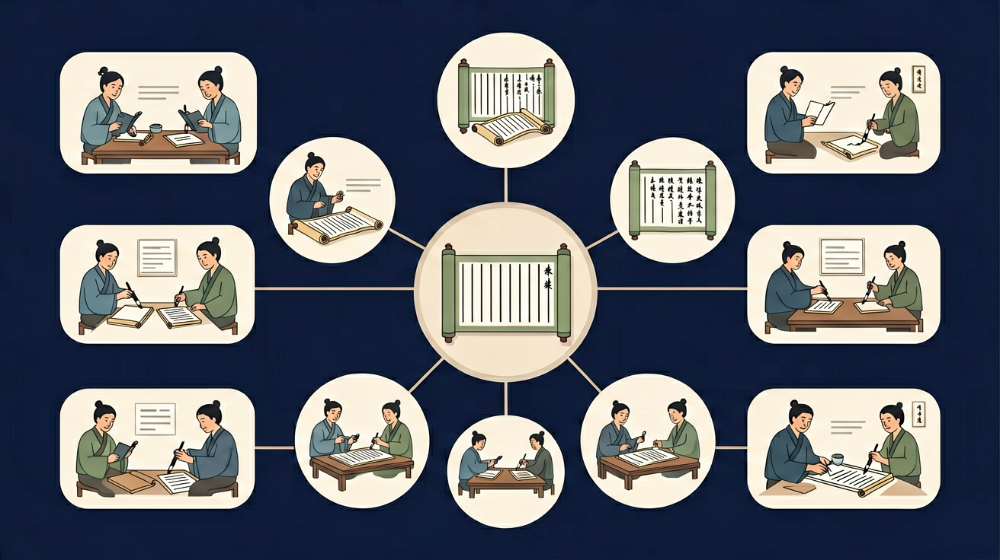

其实两个小儿都说错了！早晨和中午太阳的大小是一样的。早晨看起来大，是因为有参照物（地平线上的树木、房屋）；中午看起来热，是因为阳光照射角度更大，单位面积热量更多。孔子实事求是，"知之为知之，不知为不知，是知也"！
🎯 能说出文言文常见虚词的基本用法
🎯 能判断简单文言句式的类型
🎯 能分析古今词义的差异
❓ 为什么古人说话这么难懂？
❓ 学文言文对现在有什么用？
❓ 背那么多注释真的有用吗？
学完这一课，这些问题你都能自信地回答。
And：学生已会背诵简单古诗
But：不理解为什么古诗读起来好听
Therefore：认识古诗的平仄规律
古诗像唱歌一样有节奏，是因为有'平仄'搭配。平声字发音平缓（如'春'），仄声字发音短促（如'日'）。比如《春晓》前两句：'春眠不觉晓（平平仄仄平），处处闻啼鸟（仄仄平平仄）'，数字'2-3-2-1'的平仄交替就像打拍子。
🌍 就像跳绳要'123跳'的节奏，古诗的平仄让朗读更有趣味。试着用跺脚（仄）和拍手（平）来读《静夜思》吧！
哪句诗平仄正确？
选取药方中5个文言词汇，对比现代汉语用法
And：认识常见汉字
But：不知道古诗里字词的古义
Therefore：理解关键词的古今变化
古诗里很多字和现在意思不同。比如'走'在古代是'跑'的意思，《敕勒歌》'风吹草低见牛羊'的'见'读xiàn，表示'出现'。再如'妻子'在古代指'妻子和孩子'两个意思，杜甫《春望》'烽火连三月，家书抵万金'中'书'特指'书信'。
🌍 就像'粉丝'现在指追星族，古代指食物。下次看到古诗里的'可怜'（可爱）、'交通'（交错相通），要当小侦探哦！
古诗'却看妻子愁何在'中'妻子'指？
And：知道比喻修辞
But：不理解古诗比喻的妙处
Therefore：学习古典比喻手法
诗人爱用比喻让画面更生动。比如李白把瀑布比作'银河落九天'，贺知章说柳叶像'二月春风似剪刀'。最厉害的是'暗喻'，比如《悯农》'汗滴禾下土'不用'像'字，却让我们看到农民汗水像雨点一样落下（1滴汗≈5毫米，连续劳动2小时约流失500毫升汗液）。
🌍 就像你说'老师生气时像火山'，古诗里'露似真珠月似弓'把露珠比作珍珠。试着用古诗比喻法形容操场上的同学吧！
哪句用了暗喻？
用彩色标记虚词/实词，像拆积木一样分解句子
结合注释理解字词，想象古人说话的场景
对比现代汉语双音节词与文言文单音节词的区别
用思维导图呈现一词多义现象
仿写文言句式创作班级格言
先独立作答，再点选项查看对错与错因。
药方中'疾在腠理，汤熨之所及也'的'汤'指：
下列哪项不是'乃'在文言中的常见用法？
药方末尾'谨择吉日'的'谨'表示：
药方中'____通____'的格式用于标注通假字
答案：某
古籍校勘固定格式
'病入膏肓'的'肓'指人体____与____之间的部位
答案：心脏
中医特定解剖概念
✅ 标注'妻/子'是两个词，指妻子和子女
💡 用现代汉语习惯理解文言文
✅ 用红圈标出'之乎者也'分析功能
💡 过度关注实词翻译
给我一句简单的文言文，我来尝试翻译，你帮我指出错误并讲解每个词的意思。
📌 你可以把上面的内容复制给 AI 助手（如 DeepSeek、ChatGPT），开始互动练习！
回忆：今天学了哪些关键词和规则？试着说出来。
用自己的话解释今天学的核心概念，不看书能说清楚吗？
用今天的知识解决一个实际问题，或写一个新例子。
把今天的知识与已有知识联系起来：有什么共同点？有什么区别？能不能自己创造一道新题？